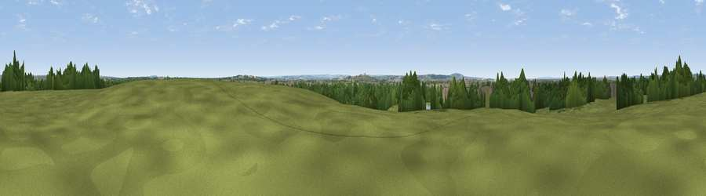

Viewpoint near Wennington
#39449 in England · top 36% of its area beats it · near Wennington · access?Where it is
The exact computed spot (TQ 52577 83325). Click the marker for map links.
Public access: no public right of way or access land is recorded at this exact spot — it may be on private land. Computed from Natural England's CRoW access layer and OpenStreetMap rights of way — not the legal definitive map. Always verify locally.
The view, rendered

A 360° render of this exact spot computed from the terrain model, tree cover and land cover — summer colours, afternoon light, calibrated against photographs of famous viewpoints. Real trees, hedges and buildings will differ in detail.
The panorama
Grey silhouette: terrain skyline in each direction (720 bearings, Earth curvature and refraction included). Dashed green: skyline with trees (+15 m) and buildings (+8 m) as obstacles. Blue strip: how far the ground is visible on each bearing.
Where the view opens
Wedge length = distance to the farthest visible ground on that bearing (vegetation-aware). Rings at 10, 25 and 50 km.
What fills the view
38% built-up · 30% grassland · 29% woodland · 2% cropland ·
Angular shares of the visible panorama (visual magnitude), not map area. Landscape diversity 0.53 (0–1 Shannon).
Key numbers
More beautiful places nearby
The staircase of upgrades: each row has a higher view potential than everything closer. Driving times are estimates from straight-line distance, calibrated against real road routing — check an actual route before setting out.
| Place | Direction | Drive | Score |
|---|---|---|---|
| Viewpoint near Erith | S · 4 km | ~9 min | 38.9 |
| Viewpoint near Great Warley | NE · 8 km | ~15 min | 40.0 |
| Viewpoint near North Ockendon | E · 8 km | ~16 min | 40.9 |
| Jury Hill | ENE · 11 km | ~21 min | 48.5 |
| Viewpoint near Horndon On The Hill | E · 15 km | ~27 min | 51.8 |
| Viewpoint near Vange | E · 20 km | ~33 min | 58.2 |
| Viewpoint near Vigo Village | SSE · 25 km | ~40 min | 60.7 |
| Viewpoint near Birling | SSE · 25 km | ~41 min | 65.1 |
51.52822, 0.19814 · source: osm viewpoint · position refined by local search. Computed location — check access rights before visiting.